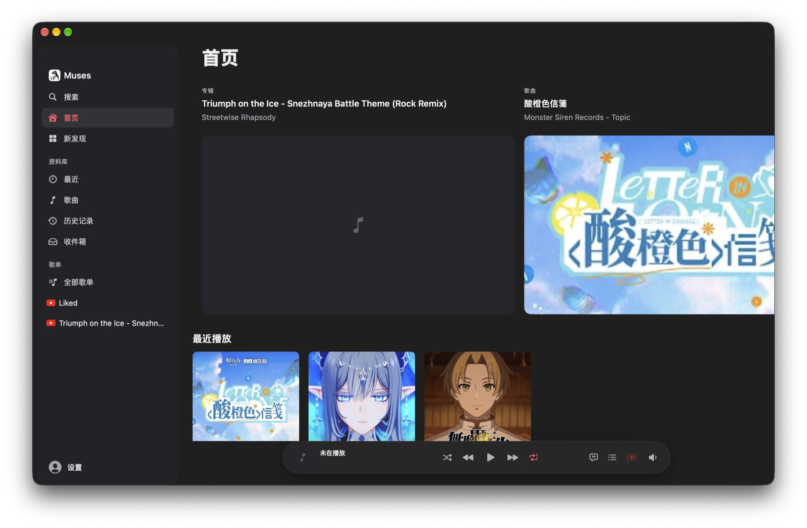
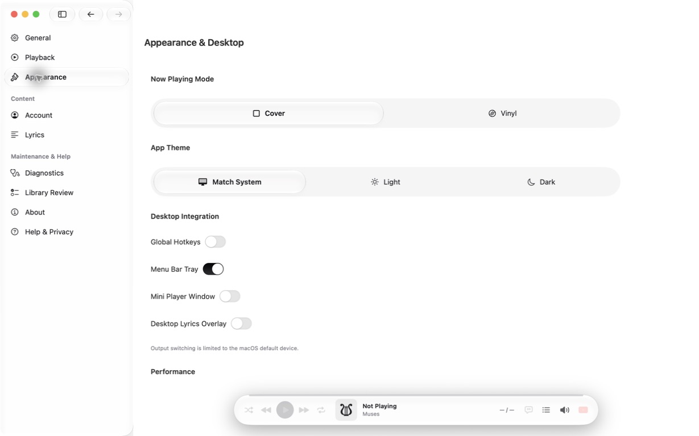

A library with context.
Bring in playlists. Keep favorites, listening history, and a queue that remembers each session.
Your music collections in a focused Mac app. Browse by artwork, follow the lyrics, and keep the moment going with a queue that knows where you started.
macOS 14 or later · Signed and notarized · Muses 0.5.1

Bring in playlists. Keep favorites, listening history, and a queue that remembers each session.
Find familiar favorites and something new, with an optional personal Home when you connect an account.
Large artwork, cover and vinyl modes, lyrics, and a full-screen Now Playing view.
A clear sidebar, simple settings, and controls that feel at home on your Mac.

Follow shows, pick up episodes where you left off, and switch from music to video when you want to see more. The floating player stays close while you explore.